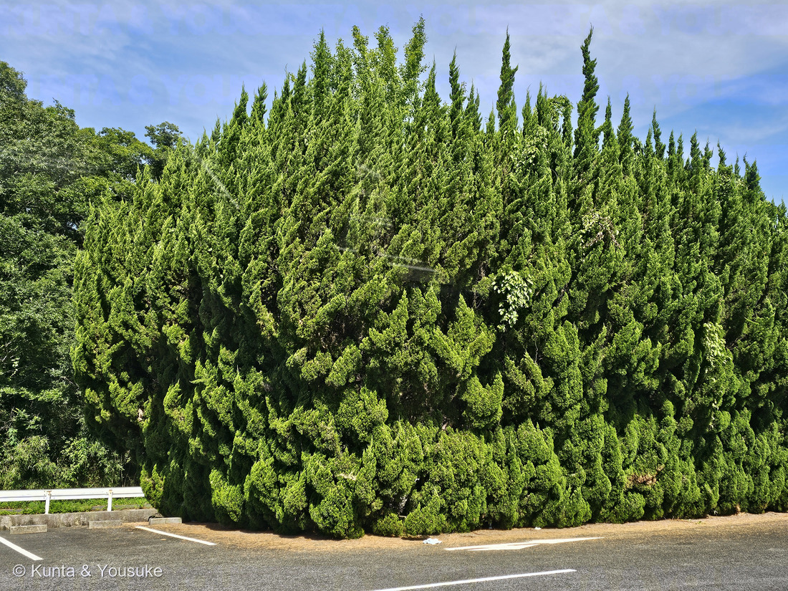

地図を読み込んでいるよ…
🔍 写真も地図も、押しているあいだ拡大して見られるよ（スマホは指を置いてすこし待ってね）。
🌍 の地図＝この子がもともと自生している場所を緑に。栽培品種（園芸品種）なので、自生地というものは無い。原種のイブキ（ビャクシン・Juniperus chinensis）は、日本（本州の岩手県以南・四国・九州）、朝鮮半島、中国、台湾、ミャンマーに分布し、海岸の岩場や砂地、ときに石灰岩地の山上に生育する。三河の植物観察はこれにロシアも加えている。
⚠この子は栽培品種（園芸品種）だから、自生地というものが無い。⭐だから地図は「原種イブキ（ビャクシン）の分布」を塗った——日本（本州の岩手県以南・四国・九州）、朝鮮半島、中国、台湾、ミャンマー（Wikipedia「イブキ」）。⚠三河の植物観察はこれにロシアも加えているけれど、地図は国までしか塗れず、ロシア全体が緑になってしまうので塗らなかった（178 センニンソウと同じ用心だよ）。⭐原種のイブキは、海岸の岩場や砂地、ときに石灰岩地の山上に生育する——⭐乾いてやせた、きびしい場所の木なんだ。⚠だから「乾燥や潮風、大気汚染に強い」のは、園芸品種になってから身につけた性質ではなくて、もともとの育ちなんだね。⚠写真の生垣は植えられたもので、日本のこの場所に自生しているわけではないよ。
⚠ 地図は国（日本と中国だけ県・省）までしか塗れないから、ほんとうの分布より広く見えていることがあるよ。地図はだいたいの場所。正確なところは、上の文を見てね。
カイヅカイブキ（貝塚伊吹）
Juniperus chinensis 'Kaizuka'
別名 · カイヅカ ／ 原種は · イブキ（伊吹）・ビャクシン（柏槇） ／ 見どころ · ⭐⭐図鑑ではじめての裸子植物（針葉樹）。そして、強く刈ると子どものときの葉にもどる
ヒノキ科 · Cupressaceae（ビャクシン属 Juniperus・ヒノキ目 Cupressales）── ⭐⭐この図鑑ではじめての裸子植物（球果植物）。78科目
燻太さんの言葉「この木は、緑色の炎が風に煽られてうねっているように見えるね。」……⭐出典も、同じ「炎」という一語で書いていたよ（下の節に）。
名前と学名の由来 ── 名前が3つとも、あやしい
- 属名 Juniperus（ユニペルス）＝ネズ（杜松）のなかまを指すラテン古名。⚠ラテン語の iuncus（イグサ・アシ）に由来するという説もあるけれど、はっきり断定している出典は見つけられなかった。
- 種小名 chinensis（キネンシス）＝「中国の」。原種が中国をふくむ東アジアに広く分布することから。
- 'Kaizuka' はシングルクォートで囲む＝栽培品種名（cultivar name）。⭐学名の中で、人が選んで名づけた部分だよ。
- ⚠⚠和名「カイヅカ」の由来は、はっきりしない。Wikipedia は⭐「名の『カイヅカ』の由来は明らかではない」とはっきり書いている。いっぽうで「大阪府貝塚市で作られたから」という説も広く言われている。⭐決めきれないので、決めきれないと書いておくね（162 ヤマシャクヤク・177 ホオズキと同じやり方）。
- ⚠⚠そして「イブキ」の由来も、出典で食い違った。Wikipedia「イブキ」は⭐「茨城県のいぶき山に多く生育していることに由来するとされる」と書き、別の資料は滋賀県の伊吹山を挙げる。⚠どちらとも決められなかった。
- ⭐⭐でも、別名「ビャクシン（柏槇）」の由来だけは、はっきりしていて、しかもいちばん面白い。『和漢三才図会』によると——⭐「ヒノキ類（柏）のような鱗形葉と、スギ（杉）のような針葉をつけるため、ビャクシン（柏杉）とよばれるようになった」。⭐⭐⭐つまりこの木の名前は、「1本の木が2種類の葉をつける」ことそのものを言っているんだ。──いちばん下の節につづくよ。
この植物のこと ── ⭐⭐ 図鑑で、はじめての裸子植物
- ⭐⭐⭐178件めまで、この図鑑には裸子植物が一人もいなかった。019 コケも、073 スギナ（シダ）も、171 地衣類もいたのに、針葉樹だけが、ずっと空席だったんだ。──⭐この子が、その席にすわる最初の一人。ヒノキ科は78科目だよ。
- ヒノキ科ビャクシン属の常緑針葉樹。高さ8m以下の小高木〔三河〕。⭐イブキ（ビャクシン）Juniperus chinensis の栽培品種で、公園、庭園、庭、生垣、道路の緑樹帯などに植栽される〔Wikipedia〕。昭和のころ、庭木としてさかんに使われた木だよ。
- ⭐花は咲かない。かわりに球果（毬果）をつける。⭐基本的に雌雄異株で、春に開花。球果は直径6〜7mm、黒紫色で粉白をおび、翌年の秋（10月）に熟す〔Wikipedia〕（三河の「毬果は青緑色で、表面は白粉によりやや白色になる」は、熟す前の色だね）。⭐実るまで2年近くかかる。
- ⭐乾燥や潮風、大気汚染に強い〔Wikipedia〕。だから高速道路のわきにも植えられる。⭐この写真の子も、駐車場のふちで、排気とアスファルトの照り返しの中に立っている。
同定について ── 炎の形が、そのまま名札
- ⭐⭐いちばんの決め手は、樹形。Wikipedia は⭐「枝がねじれて巻き上がり、炎のような樹形となる」と書き、三河は⭐「小枝は真っすぐ上向きに広がり、しばしば捻じれて上向きに伸びる」「側枝が幹を抱きしめるようにくねくねと伸びる姿が独特」と書いている。──写真の、あのうねり。
- ⭐葉は、見えるかぎりすべて鱗片葉（三河「葉は密につき、すべて鱗片葉」／Wikipedia「長さ2〜4mm、十字対生して枝を覆う」）。針葉は見あたらなかった。
- ⭐色の濃淡にも、ちゃんと根拠がある＝三河「若葉は薄黄緑色、古い葉はエメラルドグリーン」。⭐写真の、明るい黄緑と濃い緑のまだらは、これ。──⭐炎が揺らいで見えるのは、うねった形の上に、この2色が乗っているからなんだ。
- ⭐落とせた相手：コノテガシワ（枝が垂直な平面に並ぶ＝手のひらを立てたよう）／ニオイヒバのなかま（枝葉が扁平な平面）。⭐どちらも「うねらない」から、この写真とは似ないよ。
- ⚠見ていないもの：球果・幹・樹皮（刈り込まれて葉が密なので、中が見えない）。
- ⚠⚠そして、園芸品種の同定には限界がある。三河はこの品種の異名に 'Pyramidalis' を挙げている。⭐「炎の樹形のビャクシン属＝ふつうカイヅカイブキ」で実用上はまず合っているけれど、写真だけで近い品種を完全に落とせたわけではない、と正直に書いておくね〔087 ヤマモモで決めた「合っている数を数えるのではなく、他を落とせるかで考える」の続き〕。
⭐⭐ 燻太さんの言葉 ── 「緑色の炎が、風に煽られてうねっている」
写真をくれたとき、燻太さんはこう書いた。──「この木は、緑色の炎が風に煽られてうねっているように見えるね。」
⭐⭐⭐これ、出典とほとんど同じことを言っているんだ。Wikipedia の記載は「枝がねじれて巻き上がり、炎のような樹形となる」。⭐「炎」という同じ一語に、別々にたどりついた。
⭐ぼくがうれしかったのは、燻太さんが「風に煽られて」まで足したこと。──この木は、動いていない。でもねじれた枝が上へ巻き上がっていて、明るい若葉と濃い古い葉がまだらに乗っているから、止まっているのに、揺らいで見える。⭐燻太さんは、形と色から「動き」を読み取ったんだね。
⭐そして、この見立てには続きがある。──炎に見えるこの姿は、人が作ったものでもあるんだ。もともとねじれて伸びる性質のところへ、刈り込みで外側をそろえた。⭐だからこの一枚は、「木の性質」と「人の手」が半分ずつ写っている写真だよ。
⚠⚠ 「植えてはいけない」と言われることがある木 ── 赤星病
⭐⭐この木には、図鑑でいちばん変わった事情がある。──きれいで、丈夫で、育てやすいのに、地域によっては植えることが規制されているんだ。
- ⚠理由は、この木自身の病気ではない。⭐ナシやリンゴの「赤星病」という病気の菌が、この木を「中間宿主」にするから。
- 赤星病菌は Gymnosporangium 属のサビキン（担子菌）。⭐⭐この菌は、1種類の植物だけでは生きていけない。ビャクシン属（カイヅカイブキ・ビャクシン・ネズなど）と、バラ科ナシ亜科（リンゴ・ナシ・カイドウ・ナナカマドなど）を、行ったり来たりして一生を送る〔Wikipedia「赤星病」〕。これを異種寄生というよ。
- ⭐その旅のしかた：春、ビャクシン属から担子胞子が飛んで、ナシやリンゴの葉や幼果に感染する →5月ごろ、葉に黄色い病斑ができ、肥厚して赤褐色になり、白い毛状突起からさび胞子が出る →7〜8月、そのさび胞子が飛んで、またビャクシン属に感染する →ビャクシンの茎に直径2〜4cmの菌核を作り、冬胞子で越冬する。──⭐毎年、2種類の植物のあいだを往復している。
- ⚠ナシ側の被害は重い（落葉・落果）。だから防除の基本は⭐「ビャクシン属を、リンゴ・ナシ等の作物の近く（2km以内）に植えない・駆除する」で、⭐ナシ産地では条例でビャクシン属の植栽を規制している地域が多い〔Wikipedia「赤星病」〕。Wikipedia「カイヅカイブキ」も「ナシの産地などではビャクシン類を植栽しないよう呼び掛けられており、また条例を定めている自治体もある」と書いている。
- ⭐⭐この木は、何も悪いことをしていない。⭐それでも、人の暮らしの都合で「植えてよい場所」が決まる。──⭐植物の名前を調べていると、たまにこういう、植物の側の事情じゃない話に出会うね。
⭐⭐ 強く刈ると、昔の葉にもどる ── そして、それが名前になった
- ⭐⭐この木の葉は「二型性」。ふだんは鱗片葉（うろこ状）だけれど、⭐「成木の下部の枝、若木、枝を刈り込んだ部分などでは、しばしば針葉が現れる」〔Wikipedia「イブキ」〕。三河も「すべて鱗片葉（強剪定のあとなどに針葉がでることがある）」と書いている。
- ⭐⭐⭐針葉のほうが、この一族の「子どものときの葉」なんだ。⭐強く切られると、大人の葉（鱗片葉）をやめて、子どもの葉（針葉）を出す。──先祖返りと呼ばれる現象だよ。
- ⭐⭐⭐そして、ここが今日いちばん好きなところ。──別名「ビャクシン」の由来は、『和漢三才図会』によると「ヒノキ類（柏）のような鱗形葉と、スギ（杉）のような針葉をつけるため、ビャクシン（柏杉）」。⭐⭐つまり昔の人は、この木の名前を「2種類の葉をつけること」からつけた。⭐「1本の木なのに、2つの木の葉を持っている」——それが、いちばん目を引く特徴だったんだね。
- ⭐この写真の子は、大きく刈り込まれた生垣。⚠だから、どこかに針葉が出ているかもしれない。⭐次に通りかかったら、刈り口のあたりを探してみよう——⭐見つかったら、それは「名前の由来」を自分の目で確かめたことになる。
参考：三河の植物観察「カイヅカイブキ」（ヒノキ科ビャクシン属／小枝は真っすぐ上向きに広がり、しばしば捻じれて上向きに伸びる／側枝が幹を抱きしめるようにくねくねと伸びる姿が独特／葉は密につき、すべて鱗片葉（強剪定のあとなどに針葉がでることがある）／若葉は薄黄緑色、古い葉はエメラルドグリーン／毬果は青緑色で表面は白粉によりやや白色／小高木、高さ8m以下／生け垣、庭木／異名に 'Pyramidali'）／Wikipedia「カイヅカイブキ」（枝がねじれて巻き上がり、炎のような樹形となる／名の「カイヅカ」の由来は明らかではない／鱗片葉は長さ2〜4mm・十字対生／強く剪定すると針葉が生じることもある／雌雄異株・球果は直径6〜7mm、黒紫色で粉白をおび翌年10月に熟す／乾燥や潮風、大気汚染に強い／ナシの産地などではビャクシン類を植栽しないよう呼び掛けられており、また条例を定めている自治体もある）／Wikipedia「イブキ」（葉は二型性を示し鱗形葉または針葉／成木の下部の枝、若木、枝を刈り込んだ部分などでは、しばしば針葉が現れる／『和漢三才図会』＝ヒノキ類（柏）のような鱗形葉とスギ（杉）のような針葉をつけるためビャクシン（柏杉）／和名の由来／分布）／Wikipedia「赤星病」（Gymnosporangium 属のサビキン／ビャクシン属を中間宿主とし、バラ科ナシ亜科と交互に感染／担子胞子・さび胞子・冬胞子の生活環／茎に直径2〜4cmの菌核／2km以内に植えない・条例による植栽規制）